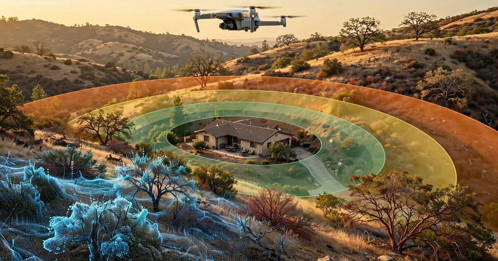

System and Method for Automated Assessment of Wildfire Defensible Space Regulatory Compliance Using Consumer Drone Photogrammetry, Semantic Vegetation Segmentation, and Edge-Deployed Structure-to-Fuel Clearance Estimation

Abstract
Disclosed is a system and method for automated assessment of wildfire defensible space regulatory compliance using consumer-grade unmanned aerial vehicles (UAVs). The system acquires overlapping aerial photographs during a low-altitude orbital flight pattern around a structure, reconstructs a georeferenced three-dimensional point cloud via structure-from-motion (SfM) photogrammetry, and applies a multi-class semantic segmentation neural network to classify ground-level and elevated vegetation by fuel type and condition. An edge-deployed inference pipeline running on a companion mobile device delineates regulatory compliance zones (0-5 ft ember-resistant zone, 5-30 ft Zone 1, 30-100 ft Zone 2) from the detected structure footprint, computes per-zone fuel density and vegetation-to-structure clearance metrics, and scores each zone against the requirements of California PRC § 4291 and 14 CCR § 1299.03 (or equivalent jurisdiction-specific defensible space codes). The system generates a georeferenced compliance report with annotated orthomosaic imagery, per-zone pass/fail determinations, and prioritized remediation recommendations, enabling fire agencies to scale inspection capacity by an order of magnitude over manual walk-through assessments.
Field of the Invention
This invention relates to wildfire risk mitigation, specifically to automated compliance assessment for vegetation management regulations surrounding structures in wildland-urban interface zones, using unmanned aerial vehicle imagery, three-dimensional scene reconstruction, and edge-deployed computer vision inference.
Background
Defensible space regulations require property owners in fire-prone areas to maintain vegetation clearance zones around structures. California's Public Resources Code § 4291 mandates 100 feet of defensible space from each side of a structure, with three distinct zones of increasing treatment intensity: an ember-resistant zone within 5 feet (Zone 0), a "lean and green" zone from 5 to 30 feet (Zone 1) requiring removal of dead vegetation and horizontal/vertical fuel separation, and a reduced fuel zone from 30 to 100 feet (Zone 2) requiring fuel spacing and grass height management. Similar requirements exist in Oregon (ORS 477.060-066), Colorado (HB24-1175), and other western states.
The inspection challenge is substantial. CAL FIRE is responsible for defensible space enforcement across more than 750,000 structures within 31 million acres of State Responsibility Area. In fiscal year 2017-2018, the agency completed only 217,666 inspections, with a KQED analysis showing the actual unique-property inspection rate was approximately 17%, far below the agency's target of 33% (one-third of properties per year for a three-year cycle). In 2022, with additional seasonal staff, CAL FIRE reached 194,176 inspections. Compliance rates across the state range from 35% (Marin County) to 98% (Santa Barbara County), according to the California Legislative Analyst's Office.
The consequences of non-compliance are severe. During the 2022 Oak Fire in Mariposa County, homes compliant with defensible space standards were six times more likely to survive an advancing wildfire. Assembly Bill 38 (2019) now requires defensible space compliance documentation for real estate transactions in High or Very High Fire Hazard Severity Zones, creating additional demand for inspections that the current manual workforce cannot meet.
Current inspection methods rely on trained personnel conducting on-foot walk-throughs of individual properties. Each inspection requires 30-90 minutes depending on parcel size and terrain, with inspectors visually estimating vegetation density, clearance distances, and fuel continuity. This process is subjective (inter-inspector agreement is not systematically measured), labor-intensive (CAL FIRE employs seasonal Forestry Technician and Forestry Aide positions specifically for this task), and limited to accessible terrain and daylight hours.
Drone-based wildfire research has focused primarily on active fire detection and monitoring (Xu et al., 2021), fuel load estimation from LiDAR point clouds (Ilangakoon et al., 2017), and post-fire damage assessment. US20200074827A1 describes drone-based vegetation mapping but targets agricultural crop monitoring, not defensible space compliance. US11113841B2 covers aerial fire risk assessment using thermal imaging but does not perform regulatory compliance scoring against specific zone-based clearance requirements. No prior art combines SfM photogrammetry, semantic vegetation segmentation, structure-to-fuel clearance measurement, and zone-based regulatory compliance scoring in an edge-deployable system designed for defensible space inspection.
Detailed Description
1. Flight Planning and Image Acquisition
The system operates with consumer-grade UAVs equipped with RGB cameras (minimum 12 MP, e.g., DJI Mini 4 Pro with 48 MP 1/1.3" CMOS sensor). The companion mobile application computes an automated flight plan based on the parcel boundary (entered manually, loaded from assessor parcel GIS data, or detected from the initial hover position via building footprint databases such as Microsoft US Building Footprints or Google Open Buildings).
The flight plan follows a dual-pattern acquisition strategy: (a) a nadir grid pattern at 30-40 m altitude above ground level (AGL) with 80% forward overlap and 70% side overlap, producing ground sampling distance (GSD) of 0.8-1.2 cm/pixel, sufficient to resolve individual shrubs, grass clumps, and structural features; and (b) an oblique orbital pattern at 15-25 m AGL with the camera gimbal tilted 30-45° inward toward the structure, capturing facade geometry and overhanging vegetation that nadir imagery cannot resolve. Total acquisition time for a 0.5-acre parcel: 8-12 minutes. For larger parcels, the system tiles the flight plan and stitches results in post-processing.
Each image is geotagged with RTK-corrected GPS coordinates (when available via the drone's RTK module or a ground control point) or consumer-grade GPS (accuracy ±2-5 m, corrected during bundle adjustment). Barometric altitude and gimbal orientation metadata are recorded for each frame.
2. Structure-from-Motion Reconstruction
The image set is processed through a structure-from-motion (SfM) and multi-view stereo (MVS) pipeline to produce: (a) a sparse point cloud from SIFT/SuperPoint feature matching and incremental bundle adjustment; (b) a dense point cloud (target density: 500-2,000 points/m²) via patch-match stereo; (c) a triangulated mesh surface; and (d) a georeferenced orthomosaic at the native GSD. Processing runs on the companion device (tablet or laptop with GPU, e.g., NVIDIA Jetson Orin Nano, Apple M-series) using an optimized SfM implementation derived from COLMAP or OpenMVG, with model compression to fit within 8 GB RAM. Processing time for a typical 200-400 image acquisition: 15-25 minutes on Jetson Orin Nano.
The pipeline separates ground points from above-ground points using a progressive morphological filter (PMF) with adaptive window size, producing a digital terrain model (DTM) and a normalized digital surface model (nDSM) representing above-ground object heights. Vegetation height is computed as nDSM minus DTM at each point.
3. Semantic Vegetation Segmentation
A multi-class semantic segmentation neural network (architecture: modified DeepLabV3+ with MobileNetV3 backbone, quantized to INT8 for edge deployment) processes the orthomosaic and co-registered nDSM to classify each 5 cm × 5 cm cell into one of the following classes:
- Structure: Building rooftops, walls, chimneys, decks, attached pergolas, carports.
- Live tree canopy: Healthy tree crowns, differentiated by estimated crown diameter and height from the nDSM.
- Dead/dying tree: Standing dead trees (snags) identified by spectral signature (brown/gray crown, absent foliage) and structural form (bare branch architecture).
- Live shrub: Manzanita, chamise, ceanothus, and other chaparral species (identified by spectral and textural features, not individual species classification).
- Dead shrub/brush: Dry, brown shrub material.
- Grass (green): Actively growing grass cover.
- Grass (dry/cured): Dry, yellow-brown grass exceeding fire-ready moisture content.
- Mulch/wood debris: Bark mulch, wood chips, downed branches, firewood piles.
- Hardscape: Concrete, asphalt, gravel, stone — non-combustible ground cover.
- Bare soil: Exposed earth.
- Other combustible: Patio furniture, stored materials, trash bins, and other items that could ignite from embers.
Training data is compiled from: (a) publicly available aerial imagery datasets with vegetation annotations, including TreeFormer (Zenodo), the Chesapeake Conservancy land cover dataset, and NAIP imagery; (b) synthetic training data generated by rendering procedural vegetation scenes in Unreal Engine with domain-randomized lighting, terrain, and vegetation density; and (c) a growing corpus of manually annotated drone inspection imagery collected from partner fire agencies.
The model achieves a target mean intersection-over-union (mIoU) of 0.72+ across all classes, with per-class IoU above 0.80 for structure, live tree canopy, and hardscape (the most critical classes for clearance computation). Model size after INT8 quantization: approximately 12 MB. Inference time on Jetson Orin Nano: 45 ms per 512×512 tile, enabling full-orthomosaic segmentation for a 0.5-acre parcel in under 3 minutes.
4. Compliance Zone Delineation
The system identifies the structure footprint from the segmentation output, inflates it by successive buffer distances (5 ft, 30 ft, 100 ft) in the georeferenced coordinate system, and clips to the parcel boundary (loaded from assessor data or manually delineated). This produces three concentric assessment zones matching regulatory definitions:
- Zone 0 (0-5 ft): Ember-resistant zone per PRC § 4291(a)(1)(A). Required: no combustible material, no vegetation except fire-resistant ground cover.
- Zone 1 (5-30 ft): Per 14 CCR § 1299.03(a). Required: removal of all dead vegetation, tree branch clearance from roofs (≥10 ft from chimneys), firewood relocated to Zone 2, spacing between shrubs and trees.
- Zone 2 (30-100 ft): Per 14 CCR § 1299.03(b). Required: horizontal and vertical fuel separation, grass height ≤4 inches (when measured seasonally), tree crown spacing.
When the property boundary intersects a zone (common on small lots), the system truncates the zone at the boundary and notes the reduced clearance in the compliance report, consistent with the statutory language "but not beyond the property line."
5. Per-Zone Compliance Scoring
For each zone, the system computes quantitative metrics and scores them against regulatory thresholds:
- Combustible fuel density (kg/m²): Estimated from segmented vegetation class, nDSM-derived volume, and species-class-specific bulk density tables (e.g., dry grass: 0.3-0.8 kg/m², manzanita: 2.5-4.0 kg/m², conifer litter: 0.5-1.2 kg/m²). Values exceeding zone-specific thresholds (Zone 0: 0 kg/m², Zone 1: species-dependent, Zone 2: per fuel separation model) are flagged as non-compliant.
- Vegetation-to-structure clearance (m): Minimum horizontal distance from any combustible vegetation pixel to the nearest structure pixel, computed via Euclidean distance transform on the segmentation raster. Tree canopy overhang above the structure (detected from the oblique imagery and nDSM) is measured separately.
- Fuel continuity index: A graph-based connectivity metric computed by treating combustible vegetation pixels as nodes and connecting adjacent pixels (8-connectivity) to form fuel pathways. The longest connected fuel pathway from the 100 ft boundary toward the structure is measured. Continuous fuel ladders (shrub-to-tree-crown connectivity in vertical space) are detected from the nDSM profile analysis along radial transects from the structure.
- Dead fuel fraction: Ratio of dead/dying vegetation area to total vegetation area within each zone. Zone 0 threshold: 0% (no vegetation permitted). Zone 1 threshold: 0% dead vegetation required by 14 CCR § 1299.03(a)(1).
- Tree crown spacing (Zone 2): Minimum distance between adjacent tree crown edges, measured from the segmented canopy polygons. 14 CCR § 1299.03(b)(1) requires horizontal spacing sufficient to prevent crown-to-crown fire spread; specific distances depend on slope and species (the system applies the CAL FIRE Property Inspection Guide lookup tables parameterized by slope extracted from the DTM).
- Grass height (Zone 2): Estimated from nDSM values in grass-classified areas. Regulatory threshold: 4 inches (10.2 cm). nDSM resolution of 2-5 cm enables this measurement with ±3 cm accuracy.
Each zone receives a composite compliance score from 0 (fully non-compliant) to 100 (fully compliant), weighted by the severity of each violation type. The overall property score is the minimum of the three zone scores, reflecting the regulatory requirement that all zones must be compliant simultaneously.
6. Compliance Report Generation
The system generates a structured compliance report containing: (a) an annotated orthomosaic with zone boundaries overlaid and non-compliant areas highlighted in graduated color (yellow for minor, orange for moderate, red for severe violations); (b) a per-zone compliance scorecard with individual metric values and pass/fail determinations; (c) a prioritized remediation list specifying the vegetation type, location (GPS coordinates and annotated image), and required action (remove, trim, space, relocate) for each violation; (d) a 3D visualization of the reconstructed scene with fuel density heatmap overlay, viewable in a web browser; and (e) temporal comparison data showing changes from the previous inspection (when available), with newly non-compliant areas flagged.
The report format is designed to serve as documentation for AB-38 real estate transaction compliance, with structured data fields matching the Ventura County Fire Department's Real Estate Inspection format and adaptable to other jurisdiction templates.
7. Temporal Change Detection
When the same property is surveyed on multiple occasions, the system performs point cloud-to-point cloud registration using iterative closest point (ICP) alignment, followed by change detection at the vegetation class level. Specific monitored changes include: new vegetation encroachment into previously cleared zones, height increase of existing vegetation beyond compliance thresholds, appearance of new combustible materials (firewood stacking, stored items), and seasonal transitions from green to cured grass (triggering re-scoring). Change detection enables predictive alerts: if vegetation growth rate in a zone projects to exceed compliance thresholds within N months, the system generates an early-warning notification.
8. Edge Deployment Architecture
The complete pipeline (SfM reconstruction, segmentation inference, compliance scoring, and report generation) runs on a companion edge device without cloud connectivity. This is critical for field deployment in rural wildland-urban interface areas where cellular coverage is unreliable. The hardware target is an NVIDIA Jetson Orin Nano (8 GB, 40 TOPS INT8) or equivalent ARM-based GPU compute module, housed in a ruggedized tablet form factor. Total processing time for a complete parcel assessment (acquisition through report): 25-40 minutes. When connectivity is available, reports sync to a cloud dashboard for agency-wide analytics, trend tracking, and workload prioritization.
9. Calibration and Validation
The system's compliance assessments are calibrated against manual inspections by certified CAL FIRE Defensible Space Inspectors. A calibration dataset of 200+ properties with paired drone-and-manual assessments establishes the confusion matrix for each metric. Inter-system agreement target: Cohen's kappa ≥ 0.75 for the binary compliant/non-compliant determination at the zone level. Properties where the automated system's score falls within a configurable uncertainty band (default: ±15 points around the pass/fail threshold) are flagged for human review, creating a tiered inspection workflow where routine compliant and clearly non-compliant properties are auto-adjudicated, and borderline cases receive manual attention.
10. Figures Description
- Figure 1: System architecture showing the drone acquisition, SfM reconstruction, semantic segmentation, zone delineation, and compliance scoring pipeline, with edge and cloud components labeled.
- Figure 2: Example orthomosaic of a 0.5-acre WUI property with the three compliance zones (0-5 ft, 5-30 ft, 30-100 ft) overlaid in semi-transparent color bands, and non-compliant areas highlighted.
- Figure 3: Semantic segmentation output showing classified vegetation types (live tree canopy, dead tree, live shrub, dead shrub, dry grass, mulch) alongside the structure footprint and hardscape.
- Figure 4: Cross-sectional profile along a radial transect from the structure showing nDSM vegetation heights, fuel continuity pathways, and vertical fuel ladder detection.
- Figure 5: Temporal change detection comparison showing vegetation regrowth between two inspections separated by 12 months, with newly non-compliant areas highlighted.
Claims
- A system for automated assessment of wildfire defensible space regulatory compliance, comprising: a consumer-grade unmanned aerial vehicle equipped with an RGB camera; a flight planning module that computes an acquisition pattern based on parcel boundaries and structure location; a structure-from-motion photogrammetry pipeline that reconstructs a georeferenced three-dimensional point cloud and orthomosaic from overlapping aerial images; a semantic segmentation neural network that classifies vegetation by fuel type and condition; a compliance zone delineation module that computes concentric buffer zones from the detected structure footprint at regulatory distances; and a per-zone scoring module that computes fuel density, vegetation-to-structure clearance, fuel continuity, and dead fuel fraction metrics and scores them against jurisdiction-specific defensible space requirements.
- The system of claim 1, wherein the compliance zone delineation module generates three concentric zones corresponding to a 0-5 foot ember-resistant zone, a 5-30 foot intensive fuel management zone, and a 30-100 foot reduced fuel zone, each truncated at the property boundary.
- The system of claim 1, wherein the semantic segmentation neural network classifies ground cover into at least the following classes: structure, live tree canopy, dead/dying tree, live shrub, dead shrub, green grass, dry/cured grass, mulch/wood debris, hardscape, bare soil, and other combustible materials.
- The system of claim 1, wherein a fuel continuity index is computed by treating combustible vegetation pixels as nodes in a graph, computing connected components via adjacency analysis, and measuring the longest connected fuel pathway from the outer zone boundary toward the structure.
- The system of claim 1, wherein vertical fuel ladder detection is performed by analyzing the normalized digital surface model along radial transects from the structure, identifying locations where shrub-height and tree-canopy-height vegetation overlap or are vertically continuous within a configurable gap threshold.
- A method for automated defensible space compliance assessment comprising: acquiring overlapping aerial images of a parcel from a UAV following a combined nadir grid and oblique orbital flight pattern; reconstructing a three-dimensional point cloud and digital terrain model via structure-from-motion photogrammetry; segmenting the resulting orthomosaic into vegetation fuel classes using an edge-deployed neural network; delineating regulatory compliance zones based on the detected structure footprint and applicable jurisdictional buffer distances; computing quantitative fuel density, clearance, continuity, and dead fuel metrics for each zone; and generating a compliance report with per-zone pass/fail determinations and georeferenced remediation recommendations.
- The method of claim 6, wherein grass height in the reduced fuel zone is estimated from the normalized digital surface model with sub-centimeter vertical resolution, and flagged as non-compliant when exceeding a jurisdiction-specific threshold.
- The method of claim 6, further comprising temporal change detection by registering point clouds from successive inspections of the same property, computing per-class vegetation area and height differences, and generating predictive alerts when vegetation growth rate projects to exceed compliance thresholds within a configurable forecast horizon.
- The system of claim 1, wherein the entire pipeline executes on an edge compute device without cloud connectivity, producing a complete compliance report in the field within 40 minutes of image acquisition completion.
- The system of claim 1, wherein properties scoring within a configurable uncertainty band around the compliance threshold are flagged for human inspector review, creating a tiered inspection workflow that prioritizes manual effort on borderline cases.
- The system of claim 1, wherein the compliance report includes structured data fields compatible with real estate transaction defensible space documentation requirements, enabling automated generation of seller disclosure documents for properties in designated fire hazard severity zones.
Prior Art References
- California PRC § 4291 — Defensible space requirements for structures in State Responsibility Areas
- 14 CCR § 1299.03 — Zone 1 and Zone 2 vegetation treatment requirements
- CAL FIRE Defensible Space Inspectors Program — 194,176 inspections in 2022; Oak Fire 6× survival rate
- California Legislative Analyst's Office, "Reducing the Destructiveness of Wildfires," 2020 — Compliance rates 35%-98% across counties
- KQED/KHSU Investigation, 2019 — CAL FIRE actual inspection rate 17% vs. 33% target
- Microsoft US Building Footprints — 130M+ building footprints from aerial imagery
- Google Open Buildings — ML-derived building footprint dataset
- COLMAP — Open-source SfM and MVS pipeline (Schonberger & Frahm, CVPR 2016)
- Xu et al., "Optimized Deployment of UAVs for Wildfire Detection," 2021 — Drone deployment optimization for active fire monitoring
- US20200074827A1 — Drone-based vegetation mapping for agricultural crop monitoring
- US11113841B2 — Aerial fire risk assessment using thermal imaging
- TreeFormer Dataset (Zenodo) — Aerial imagery with tree canopy annotations
- Chesapeake Conservancy Land Cover Dataset — 1m resolution land cover classification
- TensorFlow Lite — Edge ML deployment runtime for mobile and embedded devices
- NVIDIA Jetson Orin Nano — Edge AI compute module (40 TOPS INT8, 8 GB RAM)